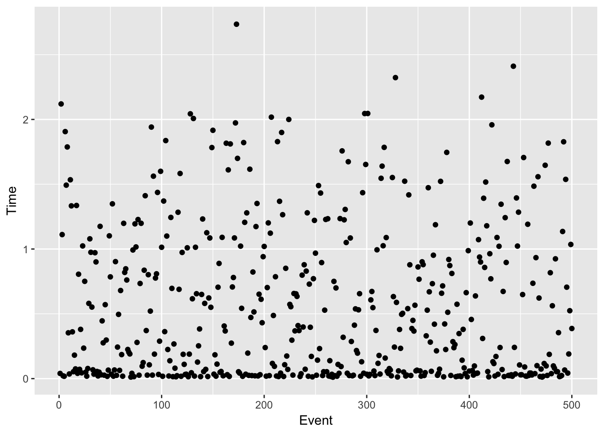
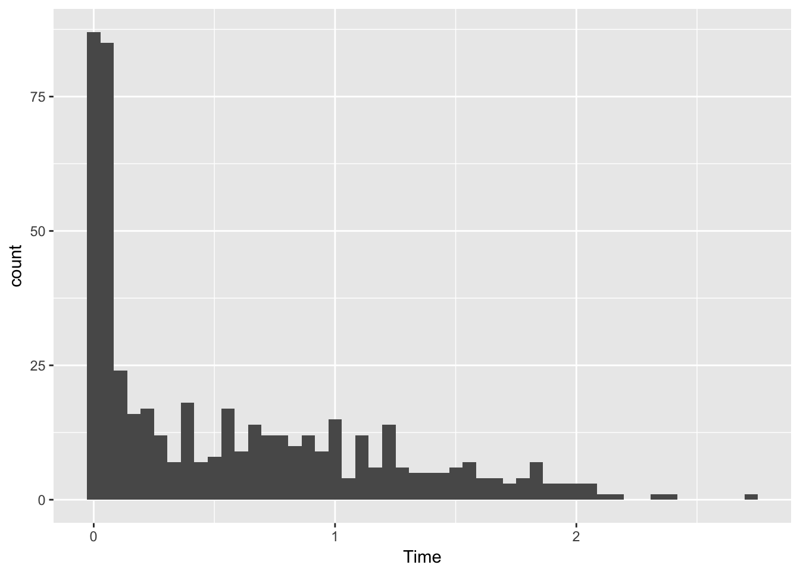

3 Module and event timing
A next step could be to understand how long time is being spent in particular art modules and on a more event by event level. Because the bulk of the simulation runs in the artg4 producer, this measurement may be less useful compared to a many module art job. But it will still be instructive so it is good to do.
The TimeTracker art service provides timing information about each module and statistics over events. It can also create a database with event by event timing information. You can run TimeTracker by adding the following to your FCL file…
services : {
// ...
TimeTracker : {
printSummary : true
dbOutput : {
filename : "v7_timing.db"
overwrite : true
}
}
// ...
}See http://cdcvs.fnal.gov/redmine/projects/art/wiki/TimeTracker for more information and instructions.
3.1 Summary printout
The default usage of the service and the configuration described here prints out a summary of timing information at the end of the job. For our example comparing gm2 v6_04_00 and gm2 v7_03_00, we get the following output…
# v6_04_00
TimeReport ---------- Time Summary ---[sec]----
TimeReport CPU = 48.492349 Real = 48.291652
================================================================================================================================
TimeTracker printout (sec) Min Avg Max Median RMS nEvts
================================================================================================================================
Full event 0.00430586 0.0969926 0.979898 0.0567863 0.111273 500
--------------------------------------------------------------------------------------------------------------------------------
path1:randomsaver:RandomNumberSaver 1.5818e-05 2.97016e-05 0.000218545 2.39715e-05 1.6956e-05 500
path1:artg4:artg4Main 0.00312922 0.0931658 0.970814 0.0553228 0.108083 500
path1:TriggerResults:TriggerResultInserter 9.438e-06 1.54518e-05 9.9472e-05 1.2985e-05 8.65874e-06 500
end_path:out1:RootOutput 0.000232495 0.00371359 0.163321 0.00142215 0.00797466 500
================================================================================================================================and
# v7_03_00
TimeReport ---------- Time Summary ---[sec]----
TimeReport CPU = 457.772410 Real = 259.748750
================================================================================================================================
TimeTracker printout (sec) Min Avg Max Median RMS nEvts
================================================================================================================================
Full event 0.0103769 0.519505 4.16775 0.257809 0.594227 500
--------------------------------------------------------------------------------------------------------------------------------
path1:randomsaver:RandomNumberSaver 3.2923e-05 5.95679e-05 0.00119983 4.83085e-05 5.79987e-05 500
path1:artg4:artg4Main 0.01027 0.519357 4.16762 0.257689 0.594228 500
path1:TriggerResults:TriggerResultInserter 1.7502e-05 2.29663e-05 9.7601e-05 2.09805e-05 7.6282e-06 500
end_path:out1:RootOutput 2.405e-06 3.71508e-06 2.0902e-05 3.5705e-06 1.11764e-06 500
end_path:out1:RootOutput(write) 0.000217776 0.00289537 0.0216031 0.00107864 0.0031938 500
================================================================================================================================Note the statistics for events. The only producer that really matters here is artg4::artg4Main, which runs Geant. On average, for v6 we see it took Geant 0.093s/muon and for v7 we see it took Geant 0.52s/muon. This is a dramatic difference. It is also interesting to look at the extremes - there was an event run by v7 that took over four seconds!
3.2 Database
As shown in the FCL fragment above, TimeTracker can optionally output a database with timing information for each event. Let’s look at the timing information for v7. For the analysis we’ll use R.
library(tidyverse)
db <- src_sqlite("data/v7_timing.db")
db## src: sqlite 3.11.1 [data/v7_timing.db]
## tbls: TimeEvent, TimeModule, TimeReportThe TimeEvent table has the total time for each event.
te <- tbl(db, "TimeEvent")
te %>% collect()## # A tibble: 500 × 4
## Run Subrun Event Time
## <int> <int> <int> <dbl>
## 1 1 0 1 0.04066667
## 2 1 0 2 2.11977645
## 3 1 0 3 1.11163810
## 4 1 0 4 0.02122142
## 5 1 0 5 0.01811102
## 6 1 0 6 1.90626422
## 7 1 0 7 1.49305715
## 8 1 0 8 1.78778369
## 9 1 0 9 0.35362362
## 10 1 0 10 0.03596895
## # ... with 490 more rowsThe TimeModule table has the time for each event broken down by module.
tm <- tbl(db, "TimeModule")
tm %>% collect()## # A tibble: 2,500 × 5
## Run Subrun Event PathModuleId
## <int> <int> <int> <chr>
## 1 1 0 1 path1:randomsaver:RandomNumberSaver
## 2 1 0 1 path1:artg4:artg4Main
## 3 1 0 1 path1:TriggerResults:TriggerResultInserter
## 4 1 0 1 end_path:out1:RootOutput
## 5 1 0 1 end_path:out1:RootOutput(write)
## 6 1 0 2 path1:randomsaver:RandomNumberSaver
## 7 1 0 2 path1:artg4:artg4Main
## 8 1 0 2 path1:TriggerResults:TriggerResultInserter
## 9 1 0 2 end_path:out1:RootOutput
## 10 1 0 2 end_path:out1:RootOutput(write)
## # ... with 2,490 more rows, and 1 more variables: Time <dbl>The TimeReport table gives the same information as the printed output from the TimeTracker service.
tr <- tbl(db,"TimeReport")
tr %>% collect()## # A tibble: 6 × 7
## ReportType Min Mean
## <chr> <dbl> <dbl>
## 1 Full event 0.011088641 5.674523e-01
## 2 path1:randomsaver:RandomNumberSaver 0.000036479 7.262060e-05
## 3 path1:artg4:artg4Main 0.010938725 5.672769e-01
## 4 path1:TriggerResults:TriggerResultInserter 0.000019366 2.520183e-05
## 5 end_path:out1:RootOutput 0.000003411 4.426006e-06
## 6 end_path:out1:RootOutput(write) 0.000236947 3.200830e-03
## # ... with 4 more variables: Max <dbl>, Median <dbl>, RMS <dbl>,
## # nEvts <int>We can make plots…
tm %>% filter(PathModuleId == 'path1:artg4:artg4Main') %>% collect() -> artg4Time
artg4Time %>% ggplot( aes(x=Event, y=Time) ) + geom_point() 
artg4Time %>% ggplot( aes(x=Time) ) + geom_histogram(bins=50)